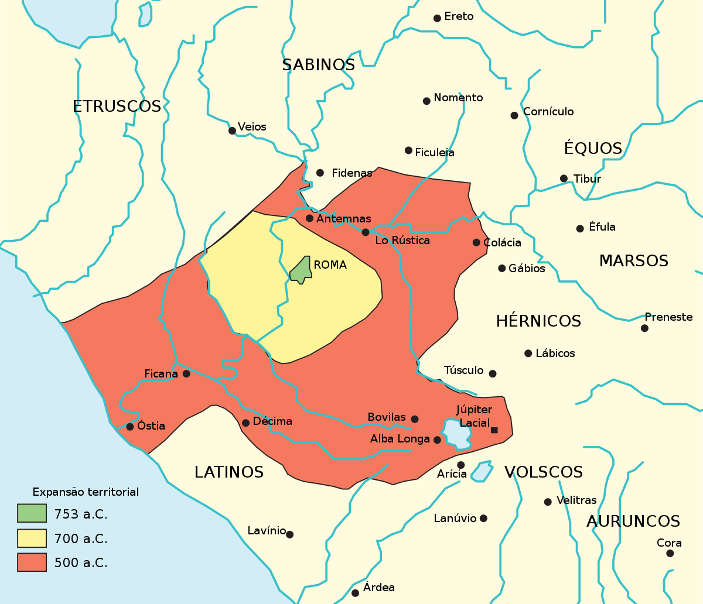
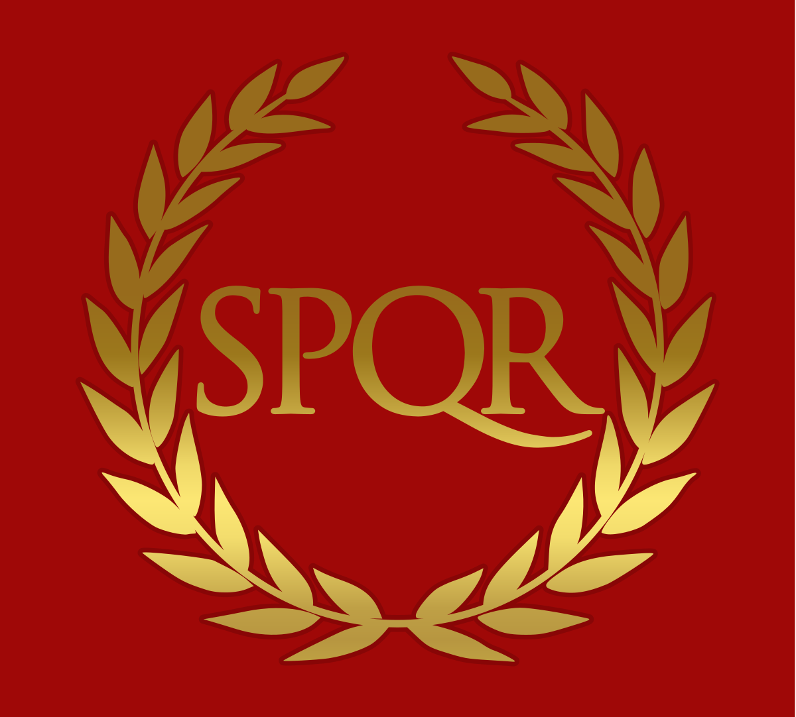
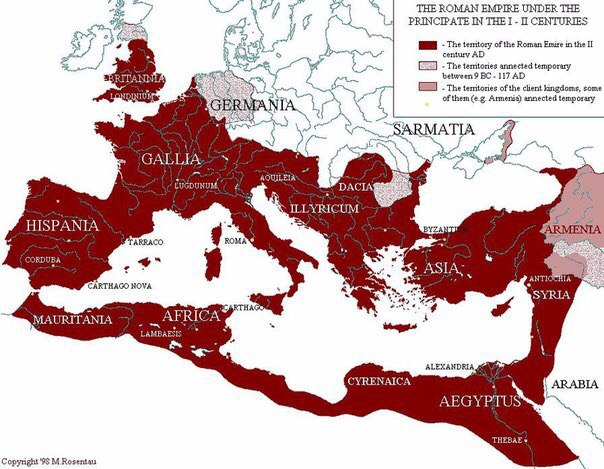

Rome
History
Старода́вній Рим — одна з цивілізацій Давнього світу та античності, отримала свою назву від головного міста — Рима, яке в свою чергу назване на честь легендарного засновника — Ромула. Стародавній Рим був цивілізацією, яка виросла з маленької землеробської громади, заснованої на Апеннінському півострові ще в X столітті до н. е. Центр Рима формувався в межах болотистої рівнини, обмеженої Капітолієм, Палатином і Квіріналом. Розміщена вздовж Середземного моря, Римська держава з часом стала однією з найбільших імперій Давнього світу. За століття свого існування, давньоримська цивілізація змінювалася від монархії до олігархічної республіки, а потім — до все більш автократичної імперії. Завдяки завоюванням та асиміляції вона згодом почала домінувати над усім Середземноморʼям. Вершини своєї могутності Стародавній Рим досяг у ІІ столітті н. е., коли під його контролем опинилися території від сучасної Шотландії на півночі до Ефіопії на півдні та від Вірменії на сході до Португалії на заході. Давньоримська цивілізація внесла свій вклад в сучасну мову, релігію, суспільство, технології, право, політику, уряд, війну, мистецтво, літературу, архітектуру та інженерію. Рим професіоналізував і розширив свої збройні сили та створив систему уряду під назвою res publica, яка надихає сучасні республіки, такі як США і Франція. Він досяг вражаючих технологічних і архітектурних подвигів, таких як будівництво великої системи акведуків і доріг, а також будівництво великих пам'ятників, палаців і громадських споруд. У 395 р. Римська імперія розділилася на дві частини — західну та східну. Уражена внутрішньою нестабільністю та атакована різними мігруючими народами, західна частина імперії, що включала Іспанію, Галлію, Британію та Італію, розпалася на незалежні королівства у V столітті. Східна частина імперії, яка мала за столицю Константинополь і включала Грецію, Анатолію, Сирію та Єгипет, вижила в цій кризі і, незважаючи на втрату Сирії та Єгипту, завойованих арабами, відновилася та проіснувала ще тисячу років, але врешті-решт її залишки анексувала турецька Османська імперія. Цю східну, християнську, середньовічну стадію існування Римської імперії історики зазвичай називають Візантійською імперією. Певний вплив на становлення давньоримської цивілізації мала культура етрусків і давніх греків. В етрусків римляни запозичили більшість букв свого алфавіту, деякі прийоми будівництва, ряд обрядів (наприклад, гладіаторські бої). Символ Риму — бронзова статуя вовчиці — виконана етруським майстром. Етруською була і остання з царських династій. Грецький вплив на римську культуру був значним, вивчалася грецька філософія, література, знання грецької мови стає обов'язковим для грамотної людини, копіюються грецькі скульптури. Давньоримську цивілізацію разом із Давньою Грецією, як правило, об'єднують у поняття «класичної античності». Стародавній Рим зробив великий внесок у розвиток права, військової справи, мистецтва, архітектури, технологій та мови у західноєвропейській цивілізації. Сучасному світові Стародавній Рим подарував римське право, деякі архітектурні форми та рішення (наприклад, хрестово-купольну систему) і безліч інших нововведень (наприклад, колісні водяні млини). Християнство як релігія народилося на території Римської імперії. Офіційною мовою давньоримської держави була латина, релігія протягом більшої частини існування була політеїстична, неофіційним гербом імперії був золотий орел, після прийняття християнства з'явилися лабаруми і хризма.
Періодизація історії Стародавнього Риму ґрунтується на формах правління, які в свою чергу відображали соціально-політичну ситуацію: від царського правління на початку історії до імперії-доміната наприкінці.
За легендою, Рим було засновано 21 квітня, 753 р. до н. е. братами-двійнятами, нащадками троянського героя Енея. Ромул (лат. Romulus) і Рем (лат. Remus) були онуками латинського царя, Нумітора (лат. Numitor) з Альба-Лонги. Царя скинув з у його жорстокий брат Амулій (лат. Amulius), в той час як дочка Нумітора, Рея Сільвія (лат. Rhea Silvia), народжувала дітей. Капітолійська вовчиця, яка вигодувала Ромула і Рема Рея Сільвія була дівою-весталкою, зґвалтованою Марсом, від якого в неї народилися напівбожественні двійнята. Новий цар боявся, що Ромул і Рем відберуть назад трон, тому наказав їх утопити. Вовчиця (або, за деякими переказами, дружина чабана) врятувала і виростила їх, і коли вони стали дорослими, то повернули трон Альба-Лонги Нуміторові. Згодом двійнята заснували їхнє власне місто, але під час сварки за право стати царем Риму Ромул вбив Рема, хоча деякі джерела визначають причину сварки тим, що кожен хотів назвати нове місто своїм ім'ям. Зрештою Ромул дав місту своє ім'я. Позаяк містові бракувало жінок, за легендою, латиняни запросили на свято плем'я сабінів і викрали їхніх незаміжніх дівчат, започаткувавши інтеграцію латинян і сабінів. За іншою легендою, записаною грецьким істориком Діонісієм, Еней очолював групу троянців у морській подорожі. Після довгих мандрів бурхливим морем вони висадилися на береги річки Тибр. Незабаром після висадки чоловіки забажали знову вийти в море, але жінки, які були з ними, не захотіли їхати далі. Одна жінка, на ім'я Рома, запропонувала іншим жінкам спалити кораблі, аби запобігти відплиттю. Спочатку чоловіки розгнівалися на Рому, але потім зрозуміли, що вони перебували в ідеальному місці для оселення. І вони назвали нову колонію на честь жінки, яка спалила їхні кораблі.  Рим виріс з поселень навколо броду через Тибр, на перехресті торгових шляхів. За археологічними свідченнями, селище Рим було, можливо, засноване у VIII ст. до н. е., хоча його могли заснувати латиняни ще в X ст. до н. е., на Палатинському пагорбі. Етруски, що спершу оселилися в Етрурії, на півночі, встановили політичний контроль над регіоном наприкінці VII ст. до н. е., сформувавши аристократичну і правлячу еліту. Наприкінці VI ст. до н. е. етруски втратили владу і вплив, і саме з цього моменту латиняни та сабіни відновлюють своє управління, створюючи республіку, з набагато обмеженішою владою правителів. Римські традиції, як і археологічні докази, вказують на комплекс в межах Римського Форуму (лат. Forum Romanum) як на осередок влади царя і релігійний центр. Нума Помпілій (лат. Numa Pompilius) був другим римським царем, наступником Ромула. Він розпочав у Римі великі будівні проекти спорудженням царського палацу в Регії та комплексу дів-весталок. У II ст. до н. е. після військових кампаній римське утворення складалося з дев'яти провінцій: шість на Заході — Сицилія, Сардинія, Корсика, Цизальпійська Галлія, Іспанія, Африка та три на Сході — Іллірія, Македонія, Азія.
За легендами і пізнішими літописами, наприклад, Тіта Лівія, Римська Республіка була встановлена приблизно в 509 р. до н. е., коли останнього з семи римських царів, Тарквінія Гордого, було скинуто з престолу, і була сформована система правління, яка базувалася на щорічних виборах магістратів і різних представницьких зборах. Конституція встановила систему стримувань і противаг, а також розподіл влади. Двома найважливішими магістратами були два консули, які разом представляли орган виконавчої влади у формі верховного правління та військове головнокомандування. Консули мали працювати в Сенаті, який спочатку був консультативною радою, що складалася з патриціїв, але згодом набрав сили і влади. Іншими посадовими особами (магістратурою) в Республіці були претори, еділи і квестори. Спочатку такі посади могли обіймати виключно патриції, але пізніше вони стали відкриті для простих людей, плебеїв. Республіканські виборчі збори включали центуріатські коміції (лат. comitia centuriata), які голосували з питань війни та миру й обирали людей на найважливіші посади, та трибутні коміції (лат. comitia tributa), які вибирали посадовців у менш важливі органи управління  Поступово римляни підкорили інші народи Італійського півострова, включаючи етрусків. Останньою загрозою римській гегемонії в Італіїї став Тарент (лат. Tarentum), головна грецька колонія, яка у 281 р. до н. е. заручилася підтримкою епірського царя Пірра, але і це їх не врятувало. Римляни захищали свої завоювання, засновуючи римські колонії в стратегічних місцях, і тим самим встановлюючи стабільний контроль над регіоном. У другій половині III ст. до н. е. Рим зіткнувся з Карфагеном у першій з трьох Пунічних воєн. Ці війни закінчилися першими для Риму заморськими завоюваннями, Сицилії та Іспанії, та піднесенням Риму як визначної імперської сили. Після завдання поразки македонцям та імперії Селевкідів у II ст. до н. е., римляни стали домінуючим народом Середземномор'я. Домінування у іноземних регіонах призвело до внутрішнього розбрату. Сенатори багатіли за рахунок провінцій, але солдати, які переважно були дрібними фермерами, занадто довго були далеко від дому і не могли утримувати свої землі, а зростаюча маса іноземних рабів і збільшення латифундій скоротили можливості оплачуваної праці. Дохід від воєнної здобичі, комерція в нових провінціях, оподаткування сільського господарства створили нові економічні умови для багатіїв, формуючи новий клас купців, «вершників» (лат. equites). Закон Клавдія (Lex Claudia) забороняв членам Сенату займатися комерцією, тому попри те, що вершники теоретично могли увійти до складу Сенату, вони були суворо обмежені у політичній владі. Сенат постійно сварився через дрібниці, неодноразово блокуючи важливі земельні реформи і відмовляючись надати класу вершників більше голосів в уряді. Жорстокі банди з міських безробітних, які контролювалися конкуруючими сенаторами, залякували електорат насильством. Ситуація досягла критичної точки наприкінці II ст. до н. е., коли брати Гракхи, двоє трибунів, спробували домогтися прийняття земельної реформи, яка б перерозподілила великі патриціанські володіння серед плебеїв. Обидва брати були вбиті, але Сенат прийняв деякі з їхніх реформ, аби заспокоїти зростаючі заворушення серед плебеїв та вершників. Відмова у наданні римського громадянства союзницьким містам Італії призвела до Союзницької війни 91-88 рр. до н. е. Воєнні реформи Гая Марія спричинили те, що солдати часто були віддані своїм командирам менше, ніж своєму рідному місту, і сильний генерал міг силою примусити місто і Сенат підкоритися. Це призвело до громадянської війни між Марієм та його противником Суллою, і досягло апогею під час диктатури Сулли у 81-79 рр. до н. е. У середині I ст. до н.е., троє людей, Юлій Цезар, Помпей та Красс, уклали секретний пакт — Перший Тріумвірат — задля контролю Республіки. Після завоювання Цезарем Галлії, протистояння між Цезарем і Сенатом призвело до громадянської війни з силами Сенату на чолі з Помпеєм. Цезар здобув перемогу і зробив себе довічним диктатором. В 44 р. до н. е. Цезаря вбили сенатори, які протистояли захопленню Цезарем абсолютної влади і прагнули відновити конституційне управління. Але згодом владу захопив Другий Тріумвірат, що складався з Октавіана — спадкоємця, призначеного Цезарем, Марка Антонія та Лепіда. Однак цей альянс скоро скотився у боротьбу за домінування. Лепіда відправили у вигнання, а Октавіан, розбивши Антонія та Клеопатру Єгипетську у битві при Акції в 31 р. до н. е., став незаперечним правителем Риму.
Розбивши своїх ворогів, Октавіан узяв ім'я Август (лат. Augustus) і привласнив собі майже абсолютну владу, зберігши лише тінь республіканської форми правління. Його призначений наступник, Тиберій, прийняв владу без серйозної опозиції, встановивши династію Юліїв-Клавдіїв, яка існувала аж до смерті Нерона у 69 р. Римська територіальна експансія продовжувалася, і держава залишалася непохитною, незважаючи на низку імператорів, які вочевидь були розбещені та продажні (наприклад, деякі дослідники вважають, що Калігула був божевільним, а Нерон мав репутацію жорстокої людини, яка більше цікавилася власними інтересами, аніж державними). Династія Юліїв-Клавдіїв змінилася династією Флавіїв. Протягом правління «П'яти гарних імператорів» (96-180 рр.), Імперія досягла свого територіального, економічного та культурного апогею. Держава була захищена як від внутрішніх, так і зовнішніх загроз, і протягом Pax Romana («Римський мир») Імперія процвітала. Із завоюванням Дакії за правління Траяна Імперія досягла піку своєї територіальної експансії; римські володіння займали площу приблизно 6,5 млн км². У період між 193 та 235 рр. правила династія Северів, в якій було декілька некомпетентних правителів, зокрема Геліогабал. Це і зростаючий вплив армії на добробут Імперії призвели до довгого періоду занепаду і зовнішніх нападів, відомого як Криза III ст. Ця криза завершилася під час правління компетентнішого Діоклетіана, який у 293 р. розділив Імперію на західну та східну частини, що керувалися тетрархією — двома імператорами (августами) і двома молодшими співправителями (цезарями). У 330 р., 11 травня, імператор Костянтин Великий остаточно закріпив статус столиці за Візантієм (лат. Byzantium) і перейменував його на Константинополь. У 395 р. Імперія назавжди розділилася на Західну та Східну. Західна Римська імперія постійно зазнавала нападів варварів, і її послідовний занепад розтягнувся на століття. У IV ст. гуни, які мігрували на захід, змусили візіготів шукати притулку у межах Римської імперії. У 410 р. візіготи під проводом Аларіха І взяли змором Рим. Вандали вдерлися у римські провінції — Галлію, Іспанію та Північну Африку, і в 455 р. взяли Рим. 4 вересня 476 р. германський вождь Одоакр примусив останнього імператора Західної Римської імперії, Ромула Августула зректися престолу. Правління Риму на Заході, що продовжувалося приблизно 1200 років, скінчилося.  Східна Римська імперія матиме таку саму долю, хоча не настільки сувору. Юстиніану вдалося ненадовго відвоювати Північну Африку та Італію, але через кілька років після його смерті володіння Візантії на Заході скоротилися до південної Італії та Сицилії. На сході, частково через нищівну пандемію — Юстиніанову чуму, Візантії загрожувало піднесення ісламу, чиї послідовники швидко захопили території Сирії та Єгипту і незабаром стали безпосередньою загрозою для Константинополя. Однак візантійцям вдалося зупинити ісламську експансію у їхні землі протягом VII ст., а на початку IX ст. повернути частину завойованих земель. У 1000 р. Східна Римська імперія була на своїй вершині: Василь ІІ відвоював Болгарію та Вірменію, розквітли культура і торгівля. Однак, через деяких час, у 1071 р. завоювання раптово закінчилися після битви при Манцикерті. Це врешті-решт призвело Імперію до неминучого занепаду. Кілька століть внутрішніх чвар та вторгнення турків підготували ґрунт для імператора Олексія І Комніна у 1095 р. дати заклик допомоги на Захід. Останній відповів хрестовими походами, що завершилися облогою Константинополя учасниками Четвертого хрестового походу. Завоювання Константинополя розпочне роздрібнення залишків Імперії на держави-наступниці. Східна Римська імперія припинила своє існування, після взяття Константинополя Мехмедом ІІ 29 травня 1453 р.